深度使用 Claude Code 半年之后，我发现它已经彻底改变了我的工作流。
做内容写文案、做学术研究，甚至脑子里偶尔冒出的想法，都可以随时让它帮我落地。这种感觉，真的太爽了。
这篇文章，我想把这半年的体验全部打包分享给你，尤其是给一直想用、却因为「Code」这个词迟迟没开始的你。从如何安装，到日常使用，再到让它个性化地服务于你，还有一些高级拓展功能。
你以为只有程序员才用得上？
听到「Code」这个词，是不是觉得这都是程序员用的东西？但 Claude Code 桌面端，上手其实特别简单，能帮你做的事也远不止写代码。
整理一整个文件夹的文档、批量重命名文件、把几十张表格里的数据汇总成一份报告、自动处理图片素材，甚至把你沟通好的内容直接写进飞书，都可以。不懂代码没关系，你只要说清楚想要什么结果就行。
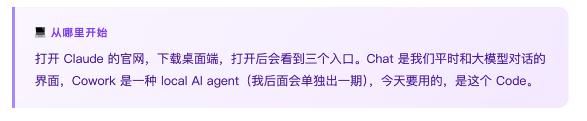
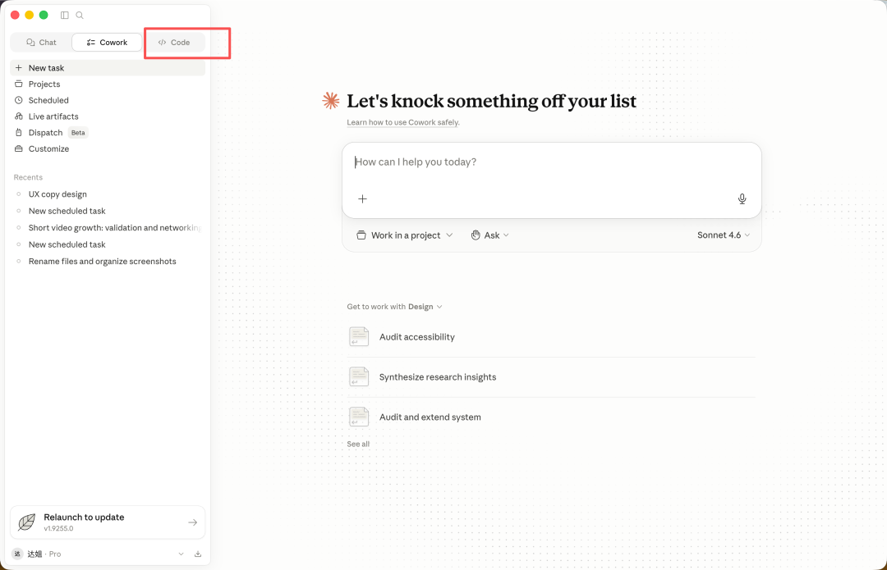
先说一个让我真的愣住了的案例
我之前为了测试各种项目，通过命令行装了一堆乱七八糟的东西，时间长了，电脑明显变慢了，但完全不知道哪些是没用的，也不知道怎么清。
于是让 Claude Code 帮我先查一下，它自己去跑命令了，结果出来，我当时就愣住了。
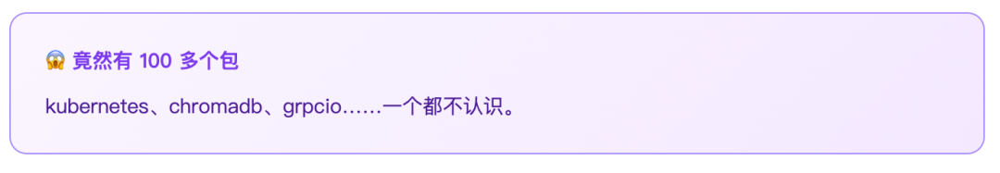
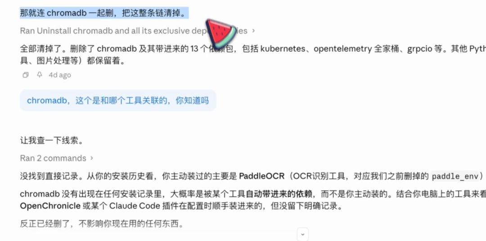
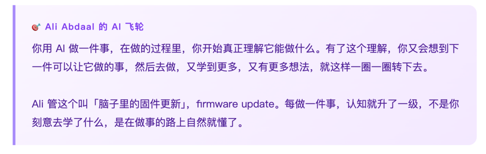
就像清理电脑这件事，我本来只是想让电脑跑快一点，结果顺带搞清楚了这些包是干嘛的，也知道了 Mac 上有更好的管理工具。
飞轮就是这么转起来的。接下来这几个场景，其实都是飞轮转动的过程。
博主工作流 × CLAUDE.md
没有 AI 加持的话，按我平时的工作量，根本没法出内容。现在就不一样了，我是把所有脚本放在同一个文件夹，每次写稿之前，让 CC 先去读懂我的风格和逻辑，再开始写，出来的初稿基本就很稳了。
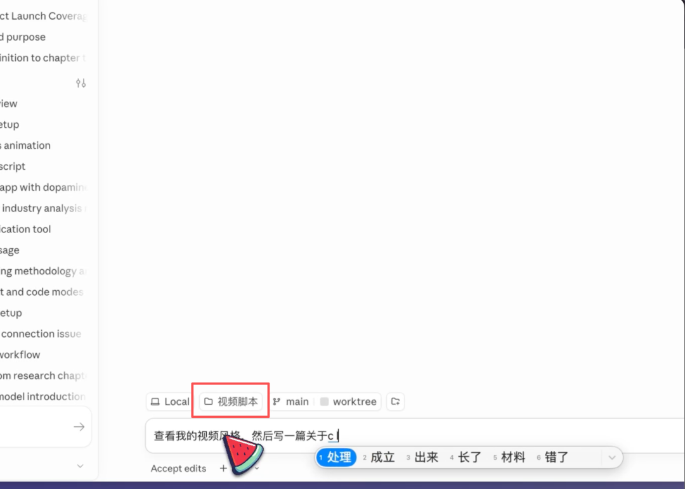
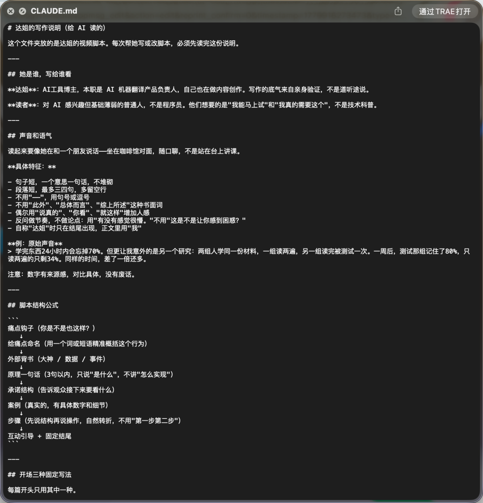
它能直接操作本地文件夹这件事，能发挥的地方其实很多。比如把所有论文文献放在一起，让它帮你整理框架、分析要点，这种对整体上下文的理解，和在 Chat 里一篇一篇聊，完全不是一个概念。
为了省 token，你甚至可以让它提前写好一份关于这些文献的 CLAUDE.md，后续只要查这个文件，就知道整体情况了。
速通任何领域，顺手做成工具
接下来这个，是我特别想单独拿出来讲的用法。我之前有一期内容讲过类似思路，有 20 多万人看过。后来发现用 Claude Code 来做，效果更好。
具体是这样，你在 YouTube 上看到一个很好的内容，时长一个多小时，很难啃，可以用插件把它的文字稿转出来，存在 Obsidian 里，然后让 CC 去读，帮你总结方法论。
总结完之后，还可以输入提示词，让它把这套方法做成一个 skill，这就相当于我们边学习，边让它做成了一个工具，后续随时可以调用。CC 在这一步处理得还是很好的，它会一步步引导你，搞清楚你的需求是什么，然后给你设计方案。
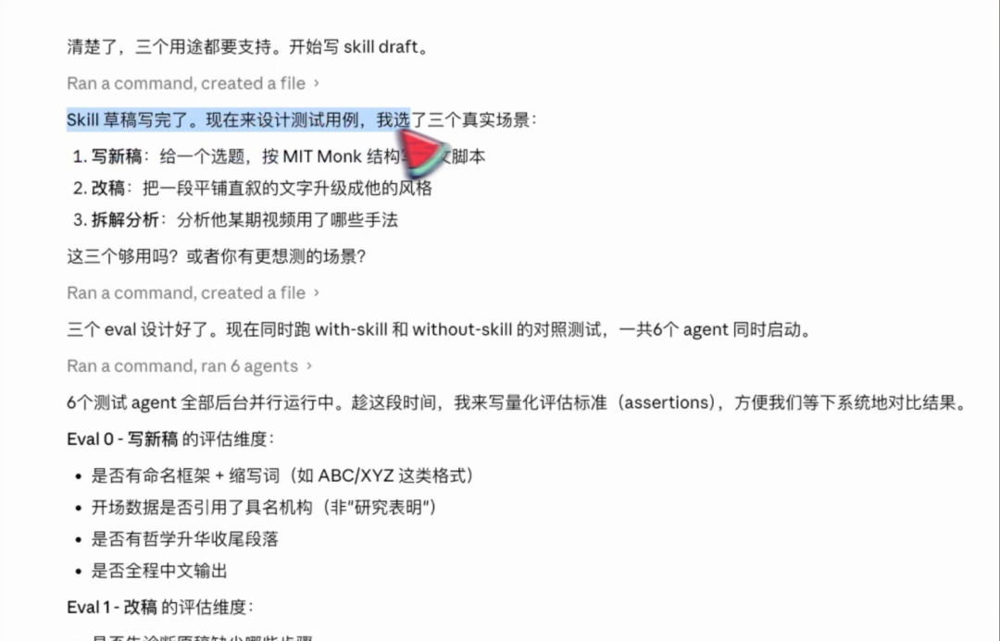
同样的办法，你可以自己制作很多好用的 skill，来帮助你学习，提高效率。
让 CC 接管飞书，行业扫描自动跑
还有一个场景我特别喜欢，就是把 CC 接入飞书。
我的本职工作是做 AI 机器翻译的，这个行业迭代很快，需要定期做行业扫描。我现在的做法是，让 CC 先去读我之前做过的调研报告，理解我的关注维度和格式习惯，然后照着去搜最新动态，论文、竞品公告、行业报道，搜完汇总，直接写进飞书的文档里。
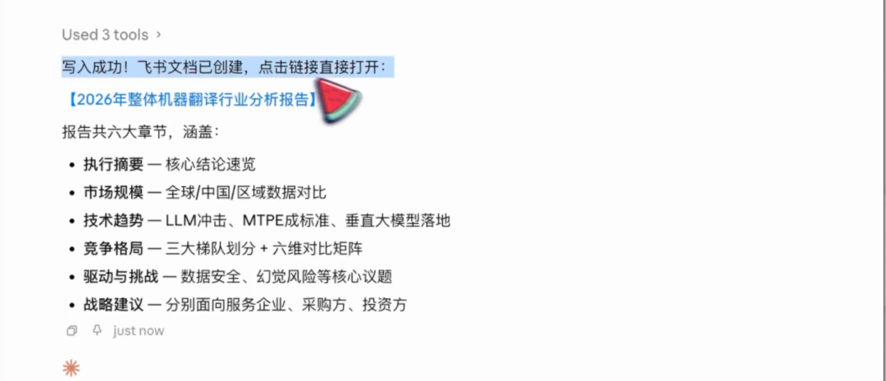
设置也不复杂，三步就好。
1. 创建企业自建应用
去 open.feishu.cn，登录之后创建一个企业自建应用，名字随便起，我叫它「Claude 助手」。
2.开通权限，发布
进去之后在左侧找权限管理，开通文档读写、日历、消息这几个权限，发布一下，测试版就够用了。
3.把 App ID 和 App Secret 告诉 CC
直接告诉 CC，让它帮你把配置弄好，它自己知道怎么处理，很快就好了。如果你日常工作用飞书比较多，这种联动真的很方便。
脑子里有个想法，它帮你落地
前面这些，基本都是日常工作场景。最后这部分，是我觉得最提升幸福感的，因为它可以把脑子里的任何想法变成现实。
我身边有不少朋友有 ADHD，我一直很想搞清楚这件事，也想为他们做点什么。于是我直接让 CC 去搜索全网关于 ADHD 的信息，并站在产品经理的角度告诉我，这个人群的形成原因、主要表现、现有产品有哪些缺口。
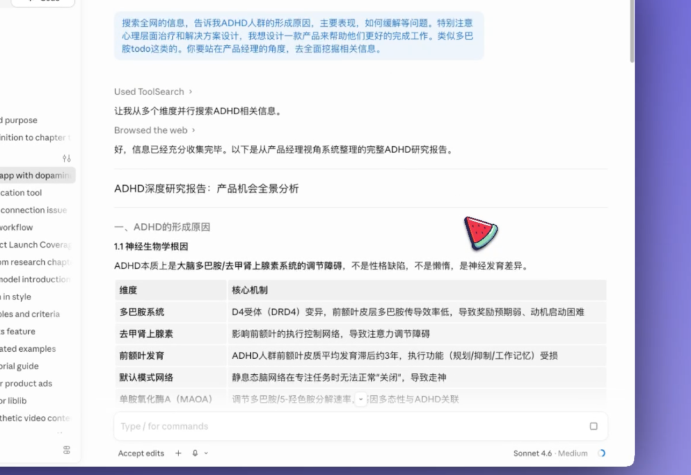
有了这份报告，我给它下了第二个任务，基于这些研究，帮我设计一个 todo App，要符合 ADHD 人群的特点，能让用户快速启动，用 AI 拆解步骤，快速找到成就感。
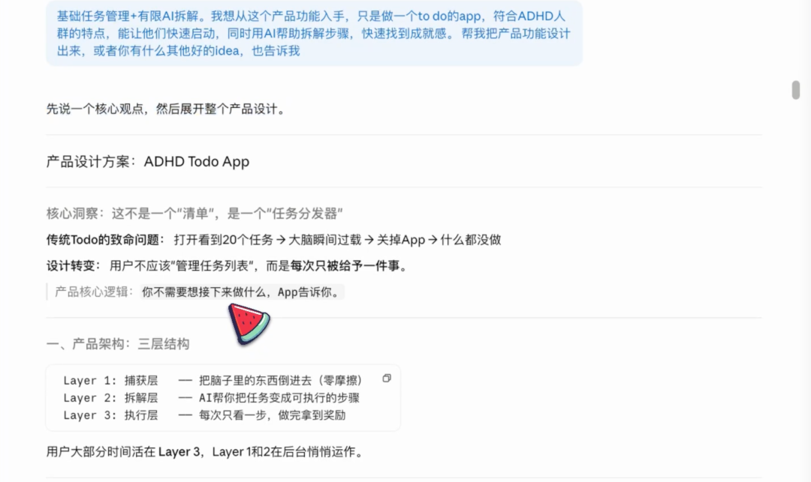
放在以前，即使有这个想法，也很难推进。但现在不一样了，想法有了，它帮你落地，需要的只是把你的逻辑说清楚。
关注达姐，带你第一视角玩转前沿科技。